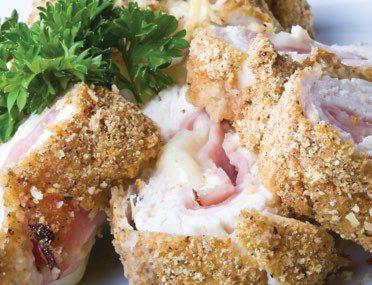

Chicken Cordon Bleu
Here’s another recipe for you to try at home. This month: Chicken Cordon Bleu – perfect for an evening meal.

Ingredients
Method
- Pre-heat the oven to 175 degrees C.
- Pound the chicken.
- Sprinkle salt and pepper on both sides of each piece of chicken.
- Place 1 cheese slice and 1 ham slice on top of each breast.
- Roll up each breast, and secure with a toothpick.
- Place in a baking tray, and sprinkle chicken evenly with breadcrumbs.
- Bake for 30 to 35 minutes.
- Remove from oven, and place 1/2 cheese slice on top of each breast.
- Return to oven for 3 to 5 minutes, or until cheese has melted.
- Remove toothpicks, and serve immediately. ✪